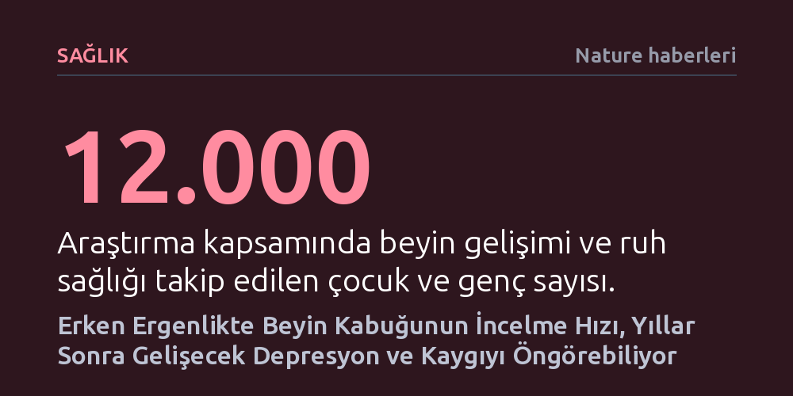

SAGLIK · Nature haberleri · 2026-10-22
ABD'de yaklaşık 12 bin gencin beyin gelişimini izleyen araştırma, erken ergenlikte beyin kabuğunun incelme hızının depresyon ve kaygıyı belirtiler başlamadan dört yıl öncesine kadar öngörebildiğini gösterdi. Bulgular, psikiyatrik risklerin devre hasarlarından ziyade gelişim takvimindeki zamansal sapmalarla ilişkili olduğuna işaret ediyor.
Ruh sağlığı sorunlarının beyindeki kalıcı devre hasarlarından ziyade gelişim takvimindeki zamansal aksamalardan doğduğunu göstererek psikiyatrik hastalıklara yaklaşımı temelden değiştiriyor.

Ergenlik dönemi, insan beyninin en hızlı yapılandığı fakat aynı zamanda depresyon ve anksiyete gibi ruhsal sorunların ilk kez su yüzüne çıktığı kritik bir evredir. Amerika Birleşik Devletleri'nde yürütülen kapsamlı bir araştırma, beynin belirli bölgelerinin erken ergenlikteki olgunlaşma hızının, psikiyatrik hastalıkların habercisi olabileceğini ortaya koydu. Üstelik bu biyolojik sinyaller, gençlerde gözle görülür klinik belirtiler başlamadan tam dört yıl öncesine kadar tespit edilebiliyor.
Araştırmacılar, yaklaşık 12 bin gencin altı yılı aşkın bir süre boyunca çekilen 30 bine yakın beyin taramasını mercek altına aldı. Elde edilen veriler, beynin dış yüzeyini kaplayan serebral korteksin büyüme çağında nasıl kademeli olarak inceldiğini benzeri görülmemiş bir ayrıntıyla haritalandırdı. Bu harita, ruh sağlığı sorunlarının aniden belirmediğini, yıllar öncesinden başlayan gelişimsel bir sürecin parçası olduğunu gösteriyor.
Çocukluktan ergenliğe geçerken beyin kabuğunun incelmesi aslında son derece sağlıklı ve doğal bir biyolojik süreçtir. Sinirbilimciler bu durumu 'sinaptik budama' olarak adlandırıyor; beyin, enerjisini daha verimli kullanabilmek ve işlevlerini keskinleştirmek için kullanılmayan nöron bağlantılarını zamanla ayıklıyor. Taramalar, bu incelmenin önce duyusal bölgelerde başladığını, soyut düşünme ve muhakemeden sorumlu karmaşık merkezlerde ise daha sonra tamamlandığını gösteriyor.
Iowa Üniversitesi'nden çocuk psikiyatrı Jacqueline Clauss ve ekibi verileri analiz ettiğinde, beyin bölgelerinin sabit bir hızda incelmediğini keşfetti. Süreç, matematiksel olarak 'S eğrisi' çizen özel bir seyir izliyor: Başlangıçta hızlanan kortikal incelme, bir süre sabit tempoda ilerliyor ve söz konusu bölge tam olgunluğa yaklaştıkça yavaşlayarak duruluyor. Bu doğal ritmin dışına çıkılması ise gelecekteki zihinsel kırılganlıkların zeminini hazırlıyor.
Elde edilen bulgular, psikiyatri dünyasında uzun süredir hâkim olan klasik bir varsayımı kökünden sarsıyor. Geleneksel görüş, zihinsel rahatsızlıkların beynin belirli sinir devrelerindeki 'bozukluklardan' veya kalıcı yapısal hasarlardan kaynaklandığını savunuyordu. Oysa yeni veriler, asıl meselenin beynin neresinin bozulduğu değil, gelişimsel takvimin ne zaman ve nasıl saptığı olduğunu gösteriyor. Dahası, bu zamanlama sapmalarının henüz doğum gerçekleşmeden önce aktif olan genetik programlar tarafından tetiklenmiş olabileceği düşünülüyor.
Çalışmaya dışarıdan dahil olan Rutgers Üniversitesi'nden sinirbilimci Avram Holmes, sonuçların önemini şu sözlerle vurguluyor: "Psikiyatrik belirtilere baktığımızda sadece beynin neresine değil, gelişim zamanlamasına da odaklanmamızı sağlıyor." Dolayısıyla ergenlikteki bir depresyon tablosu, o an yaşanan çevresel bir krizden ziyade, yıllar önce başlayan biyolojik bir zamanlama uyuşmazlığının sonucu olabilir.
Geçmişte beyin görüntüleme çalışmalarının en büyük zayıflığı, az sayıda katılımcıyla ve zamandan kopuk tekil anlık görüntülerle çalışılmasıydı. Araştırmacılar bu yöntemsel engeli, çocukları dokuz yaşından itibaren iki yılda bir beyin taramasına alan ve ebeveyn anketleriyle ruhsal durumlarını takip eden devasa ABCD (Adolescent Brain Cognitive Development) projesi sayesinde aştı.
Yine de uzmanlar önemli bir ihtiyat payı bırakıyor: Çalışmada elde edilen eğilimler, binlerce kişinin verisi bir araya getirilip ortalaması alındığında belirginleşen son derece ince örüntülerdir. Dolayısıyla mevcut bulgular, henüz klinik ortamda tek bir çocuğun beyin filmine bakıp 'bu çocuk dört yıl sonra depresyona girecek' demek için kullanılamaz. Ancak bu biyolojik takvimin çözülmesi, gelecekte belirtiler belirmeden devreye girebilecek erken müdahale yöntemleri için tarihi bir kapı aralıyor.